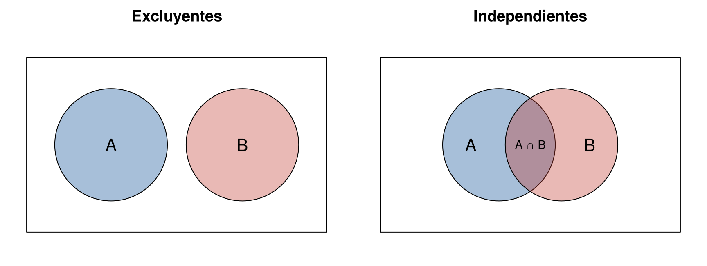

Saber que un evento ocurrió a veces cambia la probabilidad de otro y a veces no. Que llueva cambia la probabilidad de que haya trancones; que una moneda caiga en cara no cambia lo que mostrará un dado. En el segundo caso se dice que los eventos son independientes.
La independencia simplifica mucho los cálculos: permite multiplicar probabilidades. Esta página explica cuándo dos eventos son independientes, cómo comprobarlo y cómo se usa para calcular la confiabilidad de un sistema. Los bloques de código se ejecutan en orden.
Dos eventos \(A\) y \(B\) son independientes si saber que ocurrió uno no cambia la probabilidad del otro:
\[ P(B \mid A) = P(B) \]
Al reemplazar esta igualdad en la regla de la multiplicación, \(P(A \cap B) = P(A)\,P(B \mid A)\), se obtiene la forma que más se usa para comprobarlo:
\[ P(A \cap B) = P(A)\,P(B) \]
Si la igualdad no se cumple, los eventos son dependientes.
Sean \(A\): el primer dado es par, y \(B\): la suma es 7. Hay 18 resultados en \(A\), 6 en \(B\) y 3 en los dos: \((2, 5)\), \((4, 3)\) y \((6, 1)\).
dados <- expand.grid(d1 = 1:6, d2 = 1:6)
A <- dados$d1 %% 2 == 0 # primer dado par
B <- dados$d1 + dados$d2 == 7 # suma 7
mean(A & B) # P(A y B)[1] 0.08333333mean(A) * mean(B) # P(A) por P(B)[1] 0.08333333Los dos valores son \(3/36 = 1/12\), así que \(A\) y \(B\) son independientes: saber que el primer dado es par no cambia la probabilidad de que la suma sea 7.
Con \(C\): la suma es 8, el resultado cambia. Los pares con suma 8 son \((2, 6)\), \((3, 5)\), \((4, 4)\), \((5, 3)\) y \((6, 2)\), y tres de ellos tienen el primer dado par:
C <- dados$d1 + dados$d2 == 8
mean(A & C)[1] 0.08333333mean(A) * mean(C)[1] 0.06944444Como \(3/36 \neq 2.5/36\), \(A\) y \(C\) son dependientes. Si el primer dado es par, la suma 8 es más probable.
En la encuesta de Tipos de probabilidad, ¿son independientes preferir laptop y asistir a la conferencia? Se compara \(P(B \mid A)\) con \(P(B)\):
encuesta <- matrix(c(460, 40, 140, 260), nrow = 2, byrow = TRUE,
dimnames = list(Conferencia = c("Asistió", "No asistió"),
Dispositivo = c("Laptop", "Tableta")))
encuesta["Asistió", "Laptop"] / sum(encuesta[, "Laptop"]) # P(asistió | laptop)[1] 0.7666667sum(encuesta["Asistió", ]) / sum(encuesta) # P(asistió)[1] 0.5555556Entre quienes prefieren laptop asistió el 76.7 %, mientras que en el total asistió el 55.6 %. Los eventos son dependientes: el dispositivo preferido está relacionado con la asistencia.
No. Las dos palabras suenan a “eventos que no tienen relación”, pero describen cosas distintas:
La figura muestra la diferencia con diagramas de Venn. Los eventos excluyentes no se tocan. Los independientes se cruzan, y la parte común tiene el tamaño justo para que \(P(A \cap B) = P(A)\,P(B)\).
par(mfrow = c(1, 2), mar = c(0.5, 0.5, 2, 0.5))
# eventos excluyentes: círculos separados
plot(0, 0, type = "n", xlim = c(0, 10), ylim = c(0, 6), axes = FALSE, xlab = "", ylab = "", asp = 1,
main = "Excluyentes")
rect(0.2, 0.2, 9.8, 5.8)
symbols(c(2.9, 7.1), c(3, 3), circles = c(1.8, 1.8), add = TRUE, inches = FALSE,
bg = c(adjustcolor("#034A94", 0.35), adjustcolor("#C0392B", 0.35)))
text(c(2.9, 7.1), c(3, 3), c("A", "B"), cex = 1.3)
# eventos independientes: círculos que se cruzan
plot(0, 0, type = "n", xlim = c(0, 10), ylim = c(0, 6), axes = FALSE, xlab = "", ylab = "", asp = 1,
main = "Independientes")
rect(0.2, 0.2, 9.8, 5.8)
symbols(c(4, 6), c(3, 3), circles = c(1.8, 1.8), add = TRUE, inches = FALSE,
bg = c(adjustcolor("#034A94", 0.35), adjustcolor("#C0392B", 0.35)))
text(c(3.1, 6.9, 5), c(3, 3, 3), c("A", "B", "A ∩ B"), cex = c(1.3, 1.3, 0.9))
Izquierda: eventos mutuamente excluyentes, sin resultados en común. Derecha: eventos independientes, que pueden ocurrir a la vez.
Si \(A\) y \(B\) son excluyentes y se sabe que ocurrió \(A\), entonces \(B\) no pudo ocurrir: \(P(B \mid A) = 0\). Antes de saberlo, \(B\) tenía una probabilidad mayor que cero. Saber que ocurrió \(A\) cambió la probabilidad de \(B\), así que los eventos son dependientes.
Por ejemplo, al lanzar un dado, “sale 1” y “sale 2” son excluyentes. La probabilidad de que salga 2 es \(1/6\), pero si se sabe que salió 1, pasa a 0.
Se saca una carta al azar de una baraja de 52 cartas: 13 valores (as, 2 a 10, J, Q y K) en 4 palos (corazones, diamantes, tréboles y picas). Se definen tres eventos:
\(A\) y \(B\) son independientes, pero no excluyentes. Pueden ocurrir a la vez: el as de corazones es un as y es de corazones, así que \(P(A \cap B) = 1/52\). Además,
\[ P(A)\,P(B) = \frac{4}{52} \times \frac{13}{52} = \frac{1}{52} = P(A \cap B) \]
Saber que la carta es de corazones no cambia la probabilidad de que sea un as: entre los 13 corazones hay un as, y \(1/13 = 4/52\).
\(A\) y \(C\) son excluyentes, y por eso dependientes. Una carta no puede ser as y rey a la vez, así que \(P(A \cap C) = 0\). Pero \(P(A)\,P(C) = (4/52)^2 = 0.0059\), que no es 0. Si se sabe que la carta es un as, la probabilidad de que sea un rey pasa de \(4/52\) a 0.
En R, la baraja se construye con
expand.grid() y cada probabilidad es la proporción de
cartas que cumplen la condición:
baraja <- expand.grid(valor = c("As", 2:10, "J", "Q", "K"),
palo = c("Corazones", "Diamantes", "Treboles", "Picas"))
nrow(baraja)[1] 52A <- baraja$valor == "As"
B <- baraja$palo == "Corazones"
C <- baraja$valor == "K"
# A y B: independientes
c(P_AyB = mean(A & B), producto = mean(A) * mean(B)) P_AyB producto
0.01923077 0.01923077 # A y C: excluyentes, por lo tanto dependientes
c(P_AyC = mean(A & C), producto = mean(A) * mean(C)) P_AyC producto
0.00000000 0.00591716 | Mutuamente excluyentes | Independientes | |
|---|---|---|
| Qué significa | No pueden ocurrir a la vez | Saber que ocurrió uno no cambia la probabilidad del otro |
| Cómo se comprueba | \(P(A \cap B) = 0\) | \(P(A \cap B) = P(A)\,P(B)\) |
| ¿Pueden ocurrir juntos? | No | Sí |
| Ejemplo con la baraja | Sacar un as y sacar un rey | Sacar un as y sacar un corazón |
Si dos eventos tienen probabilidad mayor que cero, no pueden ser excluyentes e independientes al mismo tiempo: si son excluyentes, son dependientes.
Un circuito tiene dos componentes, \(A_1\) y \(A_2\), que funcionan de forma independiente con probabilidades \(P(A_1) = 0.90\) y \(P(A_2) = 0.95\).
\[ P(\text{serie}) = P(A_1 \cap A_2) = P(A_1)\,P(A_2) = 0.90 \times 0.95 = 0.855 \]
\[ P(\text{paralelo}) = 1 - P(A_1^c \cap A_2^c) = 1 - (0.10 \times 0.05) = 0.995 \]
p1 <- 0.90
p2 <- 0.95
p1 * p2 # en serie[1] 0.8551 - (1 - p1) * (1 - p2) # en paralelo[1] 0.995Poner componentes en paralelo aumenta la confiabilidad; ponerlos en serie la disminuye. Por eso los sistemas críticos, como los de un hospital, tienen equipos de respaldo en paralelo.
Se puede comprobar con simulación. La función runif()
genera números al azar entre 0 y 1; un componente funciona si su número
es menor que su probabilidad:
set.seed(2026)
n <- 20000
funciona1 <- runif(n) < p1
funciona2 <- runif(n) < p2
mean(funciona1 & funciona2) # en serie[1] 0.85405mean(funciona1 | funciona2) # en paralelo[1] 0.995Estos cálculos suponen que un componente no afecta al otro. Si los dos dependen de la misma fuente de energía, un corte los apaga a la vez y la confiabilidad real del sistema en paralelo es menor que 0.995.
Si un experimento se repite \(n\) veces de forma independiente y en cada repetición un evento tiene probabilidad \(p\), la probabilidad de que el evento ocurra al menos una vez se calcula con el complemento:
\[ P(\text{al menos una vez}) = 1 - (1 - p)^n \]
Por ejemplo, un control de calidad tiene una probabilidad de 0.05 de rechazar por error un producto bueno. Si se revisan 10 productos buenos, la probabilidad de rechazar al menos uno por error es
1 - (1 - 0.05)^10[1] 0.4012631Un evento poco probable en un solo intento se vuelve probable cuando se repite muchas veces.
Si una moneda balanceada cae cinco veces seguidas en sello, la probabilidad de cara en el sexto lanzamiento sigue siendo 0.5. Los lanzamientos son independientes: la moneda no recuerda los resultados anteriores ni “compensa” una racha.
| Problema | Causa | Solución |
|---|---|---|
| Tratar como independientes dos eventos excluyentes | Confundir “no ocurren juntos” con “no se afectan” | Si son excluyentes y tienen probabilidad positiva, son dependientes |
| Multiplicar probabilidades de eventos dependientes | Se supuso independencia sin revisarla | Usar \(P(A)\,P(B \mid A)\) |
| En paralelo, sumar las probabilidades de los componentes | Se olvidó la intersección; la suma puede pasar de 1 | Usar \(1 - (1 - p_1)(1 - p_2)\) |
| Creer que después de una racha “toca” el otro resultado | Falacia del jugador | Los ensayos independientes no tienen memoria |
Con dos dados, sean \(D\): los dos dados son iguales, y \(E\): el primer dado es 1. ¿Son independientes? Compruébelo en R.
\(P(D) = 6/36\), \(P(E) = 6/36\) y \(P(D \cap E) = 1/36\), por el par \((1, 1)\). Como \(6/36 \times 6/36 = 1/36\), son independientes.
D <- dados$d1 == dados$d2
E <- dados$d1 == 1
mean(D & E)[1] 0.02777778mean(D) * mean(E)[1] 0.02777778Con la tabla apply(Titanic, c(2, 4), sum), compruebe si
el sexo y la supervivencia fueron independientes.
sexo_superv <- apply(Titanic, c(2, 4), sum)
sobrevivir <- sum(sexo_superv[, "Yes"]) / sum(sexo_superv)
mujer_sobrevive <- sexo_superv["Female", "Yes"] / sum(sexo_superv["Female", ])
c(P_sobrevivir = sobrevivir, P_sobrevivir_dado_mujer = mujer_sobrevive) P_sobrevivir P_sobrevivir_dado_mujer
0.3230350 0.7319149 En total sobrevivió el 32.3 % de las personas, pero entre las mujeres sobrevivió el 73.2 %. No son independientes.
Un sistema tiene un componente con probabilidad 0.98 de funcionar, conectado en serie con un bloque de dos componentes en paralelo, cada uno con probabilidad 0.90. Los componentes son independientes. ¿Cuál es la probabilidad de que el sistema funcione?
El bloque en paralelo funciona con probabilidad \(1 - 0.10^2 = 0.99\). En serie con el primer componente: \(0.98 \times 0.99 = 0.9702\).
0.98 * (1 - (1 - 0.90)^2)[1] 0.9702Un vendedor cierra una venta en el 10 % de sus llamadas, de forma independiente. ¿Cuál es la probabilidad de que cierre al menos una venta en 20 llamadas? ¿Cuántas llamadas necesita para que esa probabilidad supere 0.95?
1 - 0.9^20 # al menos una venta en 20 llamadas[1] 0.8784233llamadas <- 1:50
min(llamadas[1 - 0.9^llamadas > 0.95])[1] 29La probabilidad es 0.878 con 20 llamadas, y supera 0.95 a partir de 29 llamadas.
runif(),
apply() y de la tabla Titanic.Última revisión: 7 de noviembre de 2026.